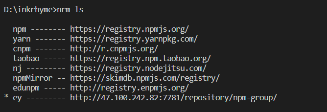

nrm是一款npm源管理器，允许你快速的在不同的npm源之间进行切换
一、nrm全局安装
二、nrm使用
1、查看目前可用的镜像源地址(带*号即为当前使用源)

2、切换源
其中为要切换的源名称，比如我们现在要切换到官方npm源即可用如下指令：
3、添加源
1
| nrm add <registry> <url>
|
其中，为源名称，为源地址
比如我们现在要添加某个公司私有的npm源，源地址为：http://47.100.242.82:7781/repository/npm-group/，源名称为ey，则可用以下指令：
1
| nrm add ey http://47.100.242.82:7781/repository/npm-group/
|
添加后可用nrm ls查看新的源是否已添加进去
4、删除源
5、测试源速度(即响应时间)
三、注意事项
如果自己电脑上存在使用多种源的情况，采用nrm可实现方便的切换。但鉴于不同源的使用场景不同，一时忘记当前所用源可能出现某些依赖无法下载，自己的项目文件无法正常上传，npm账号没法登陆（比如当前是公司私有源的情况下）等情况，这时候要查看当npm源是否是自己所需的，及时切换。